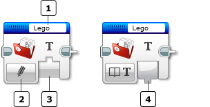
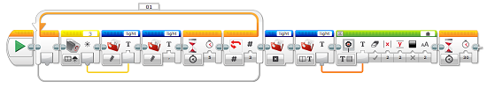

					<table cellpadding="0" cellspacing="0" border="0"><tbody><tr><td>
	
						<h1>文件读写模块<a name="top"></a></h1>
		<div id="block_529" class="block blockHeader">
				<table cellspacing="0" cellpadding="0" border="0">
			<tbody><tr>
				<td valign="top" class="image"></td>
				<td valign="top" class="description"><div class="text-wrapper">文件读写模块使您可以对 EV3 程序块上的文件读取和写入数据。</div></td>
			</tr>
		</tbody></table>
			</div>
	<div id="block_530" class="block blockChaptor">
		<div class="title"><a name="ChooseTheFileNameAndMode" style="position:relative; top:-10px;"></a>选择文件名称和模式</div>
		<div class="description"></div>
	</div>
	<div id="block_531" class="block blockTable bullets">
		<table class="blockTable">
		
<tbody><tr><td> <a name="FileName" style="position:relative; top:-10px;"></a></td><td>文件名称 </td></tr><tr><td></td><td>模式选择器 </td></tr><tr><td></td><td>输入 </td></tr><tr><td></td><td>输出 </td></tr>		</tbody></table>
	</div>
	<div id="block_532" class="block blockStep">
		<div class="title"></div>
		<div class="description">以下三个步骤需要使用文件读写模块：<br>
<br>
1.	将数据写入文件。<br>
2.	关闭文件。<br>
3.	读取文件。<br>
<br>
这些步骤可以在紧跟在相互之后的模块中设置，或是放置在整个程序中。<br>
<br>
创建了文件之后，可以通过文件读写模块或<a href="./index.html?id=MemoryBrowser">内存浏览器</a>来读写它们。</div>
	</div>
	<div id="block_533" class="block blockChaptor">
		<div class="title"><a name="Modes" style="position:relative; top:-10px;"></a>模式</div>
		<div class="description"></div>
	</div>
	<div id="block_534" class="block blockMode">
		<div class="title"><a name="Mode_Text" style="position:relative; top:-10px;"></a>读取 <a name="Mode_Numeric" style="position:relative; top:-10px;"></a></div>
		<div class="description"><br>
<br>
“读取”模式将文本文件中的数据发送到输出。可以使用模式选择器选择输出必须是文本还是数字。  <br>
<br>
尽管可以按文本形式读取数字，但是如果尝试按数字形式读取文本，则 EV3 程序块会行为异常。 <br>
<br>
在关闭某个文件之前，不能从该文件进行读取。有关更多信息，请参见下面的<a href="./index.html?id=FileAccess#Mode_Close">关闭</a>模式。</div>
			<div class="links">使用的<a href="./index.html?id=FileAccess#InputsAndOutputs">输出</a>：<a href="./index.html?id=FileAccess#Textlink">文本</a>、<a href="./index.html?id=FileAccess#Numeric">数字</a></div>
	</div>
	<div id="block_535" class="block blockMode">
		<div class="title"><a name="Mode_Write" style="position:relative; top:-10px;"></a>写入</div>
		<div class="description"><br>
<br>
“写入”模式会复制文本以写入数据并将其写入文件。如果文件不存在，则此模块会创建文件。<br>
<br>
在现有文件中写入将在文件的末尾添加数据。写入不会擦除任何预先存在的数据。  <br>
<br>
要重新写入文件，请先使用“删除”模式删除文件，然后使用“写入”模式创建新数据文件。</div>
	</div>
	<div id="block_538" class="block blockMode">
		<div class="title"><a name="Mode_Delete" style="position:relative; top:-10px;"></a>删除</div>
		<div class="description"><br>
<br>
“删除”模式会永久删除指定文件。</div>
	</div>
	<div id="block_539" class="block blockMode">
		<div class="title"><a name="Mode_Close" style="position:relative; top:-10px;"></a>关闭</div>
		<div class="description"><br>
<br>
“关闭”模式会关闭指定文件。 <br>
<br>
必须在完成写入之后关闭文件才能读取它。</div>
	</div>
	<div id="block_540" class="block blockExample">
		<div class="title">示例</div>
		<div class="image"></div>
		<div class="description">此程序将三个环境光测量（以 5 秒间隔获取）写入“light”文件。使用逗号分隔数字。程序随后关闭该文件。 <br>
<br>
会读取“light”文件的内容，然后显示在 EV3 程序块显示屏上。程序等待 30 秒，然后结束，这样便不会立即清除显示。</div>
	</div>
	<div id="block_541" class="block blockChaptor">
		<div class="title"><a name="InputsAndOutputs" style="position:relative; top:-10px;"></a>输入与输出 <a name="Parameters" style="position:relative; top:-10px;"></a></div>
		<div class="description">文件读写模块的输入提供要写入文件的数据。可以将输入数据直接输入到模块中。或者，可以通过<a href="./index.html?id=DataWires">数据线</a>从其他编程模块的输出提供数据。</div>
	</div>
	<div id="block_542" class="block blockTable ">
		<table class="blockTable">
		

			<tbody><tr>
<th>输入</th><th>类型</th><th>备注</th>			</tr>
<tr><td>要写入的文本 <a name="TextIn" style="position:relative; top:-10px;"></a></td><td>文本</td><td>要写入文件的文本或数字</td></tr>		</tbody></table>
	</div>
	<div id="block_543" class="block blockStep">
		<div class="title"></div>
		<div class="description">文件读写模块的输出提供从文件读取的数据。</div>
	</div>
	<div id="block_544" class="block blockTable ">
		<table class="blockTable">
		

			<tbody><tr>
<th>输出</th><th>类型</th><th>备注</th>			</tr>
<tr><td>数字 <a name="Numeric" style="position:relative; top:-10px;"></a></td><td>数字</td><td>以数值形式输出文件中的文本</td></tr><tr><td>文本 <a name="Text" style="position:relative; top:-10px;"></a>  <a name="Textlink" style="position:relative; top:-10px;"></a></td><td>文本</td><td>以文本形式输出文件中的文本</td></tr>		</tbody></table>
	</div>
	
			<div id="quick">
				<div class="header"><a href="./index.html?id=FileAccess#header">文件读写</a></div>
					<div class="quickText">快速链接</div>
					
					<ul>
	<li><a href="./index.html?id=FileAccess#ChooseTheFileNameAndMode">选择文件名称和模式</a></li><li><a href="./index.html?id=FileAccess#Modes">模式</a></li><li><a href="./index.html?id=FileAccess#InputsAndOutputs">输入与输出</a></li>					</ul>
			</div>
	
	</td></tr></tbody></table>